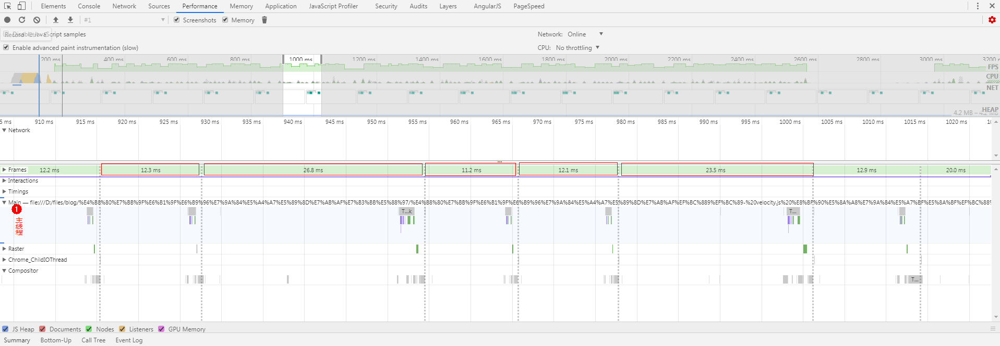
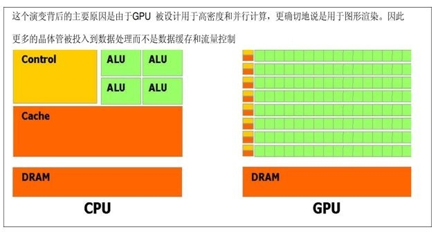
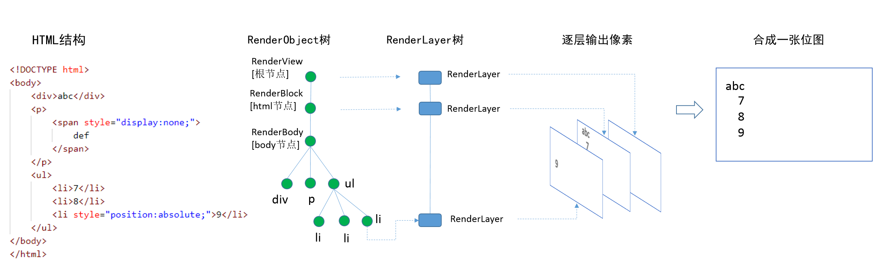
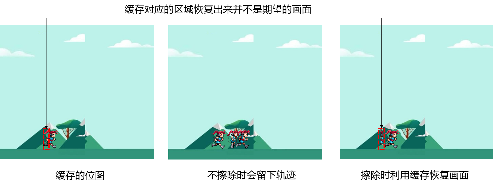

原文连接:https://www.cnblogs.com/dashnowords/p/11706774.html
目录
示例代码托管在：http://www.github.com/dashnowords/blogs
博客园地址：《大史住在大前端》原创博文目录
华为云社区地址：【你要的前端打怪升级指南】

一. 高性能动画
动画的流畅程度通常是以FPS(Frame Per Second，每秒帧率)作为衡量的。在摄像机录制视频时每一帧实际上包含了一段时间内的画面记录（长曝光摄影的道理相同的），如果画面里的事物在运动，那么暂停播放时看到的画面通常都是模糊的，这样的画面也被称为“模糊帧”，加上双眼“视觉暂留”效果的影响，影视作品一般只要达到24FPS就可以展示出看起来连续运动的画面；而在页面的渲染中，每一帧都是由计算机计算渲染出来的精确画面，帧和帧之间并不存在模糊过渡，所以通常认为需要达到50FPS~60FPS的帧率，才能够得到较好的观看体验。
为了达到尽可能接近60FPS以上的帧率，浏览器每一帧的计算和绘制所花费的时间就需要控制在1000/60≈16.6ms以内，根据Google开发者社区提供的资料，开发者最好能够将所有的工作控制在10ms左右，以便给浏览器一些处理内部工作的时间，否则就无法在限定的时间内完成画面更新，动态的内容就会表现出卡顿，对用户体验造成负面影响。下一节就来看一下，在这16ms的时间里，浏览器都需要完成哪些任务。
二. 像素渲染管线
基本渲染流程
谈起浏览器的工作流程，你可能会在大多数文章中见过下面这张图：

它直观地描述了浏览器如何将HTML文件和CSS样式文件通过逐步处理最终合成渲染树并展示在页面上的过程，当然其中每一步都是非常复杂的，如果你对此还不熟悉，可以通过【浏览器的工作原理：新式网络浏览器幕后揭秘】这篇文章进行了解（极力推荐这篇文章！）。但实际上上面的流程里并没有覆盖网站的整个生命周期，它只是描述了从用户获取到网站首页和资源文件后到完成首屏渲染这段时间内所做的工作，尽管工作流程几乎是一致的，但诸如响应用户的交互动作，在页面上实现动画等等内容，只通过上面的宏观原理图理解起来还是很困难的。当开发者谈及浏览器渲染性能的话题时，我们通常会听到“重排”、“重绘”等术语，实际上它们就是对这后半部分工作的描述，它被称为“浏览器像素渲染管线”，此时就需要祭出Google开发者社区提供的基本原理图：

编写在JavaScript代码中的那些事件监听器、定时任务等等异步触发的代码就会在橙色的部分执行，这部分代码运行在主线程中，如果有问题的代码或是执行时间较长的代码在其中造成了阻塞，后续的几个步骤就只能等着，这会直接延缓页面的渲染甚至导致页面直接崩溃，当JavaScript执行完一个宏任务并清空了当前的微任务队列后，就会开始UI渲染流程，进入下一个环节。
在Style阶段需要找出发生变更的样式并重新计算相关的尺寸，当然在首屏渲染之前第一次处理CSS样式时，浏览器肯定已经对计算结果进行了缓存，以便在这像素渲染管线处理时节省时间。
计算完样式本身后，就需要进入Layout阶段，重新来计算发生样式变动的元素应该以怎样的盒模型尺寸绘制在画面上的哪个位置，网页中的基本排版遵循正常文档流的规则，所以一个元素尺寸变化后，就有可能需要重新计算其父子元素或临近元素的位置，不难想象这是一个极容易引发蝴蝶效应的环节。完成了Layout布局后，可以看到图中使用的颜色也发生了变化，因为相对而言它们的开销就比较轻量了。
Paint阶段就是生成像素数据的过程，它会将元素的背景、边框、阴影等等可见的部分绘制出来，它们可能会被绘制在多个层上。
Composite阶段，由于绘制阶段生成的画面可能分布于多个层，那么最终渲染的结果就需要将它们按照一定的顺序完成画面的重叠，这就是浏览在合成阶段主要的工作，当然这个过程并不一定是由CPU独自完成的，后面还会讲到。当动画执行时，浏览器会不断创建帧，上面的过程就会反复发生，从而实现帧画面的不断变动：

回流和重绘
不同的CSS样式的性能开销和造成的影响是不同的，所以上面的像素渲染管路的各个阶段并不一定都有工作要做，如果发生变更的元素样式不会造成布局变化，那么layout阶段就不需要做什么工作，如果发生变更的CSS属性也可以不用重新计算各部分的像素颜色，那么paint阶段也就没有什么工作要做，这样渲染管路就被简化成为：

这是我们最期望得到的理想状态。如果发生变化的CSS属性导致Layout阶段任务量的增加，这类情况就被称为“回流”或“重排”，如果发生变化的CSS属性导致了Paint阶段任务量的增加，这类情况就被称为“重绘”，它的开销相比Layout而言更小，从管线的特征不难明白，“回流”必然会导致“重绘”，但反之则不一定成立。
只通过Composite阶段的工作就可以处理的CSS属性就是opacity（透明度）和transform（变形），它们是各类场景中优先推荐使用的性能最高的特性，transform可以很方便地模拟出位置变化，在可以忽略画面精度的情况下（例如纯色的背景）也可以使用scale来模拟尺寸变化。
所以在满足需求的前提下，我们当然希望选择改变性能开销更小的属性，以便可以在16ms的时间内完成整个渲染管线的任务，这里所说的性能，通常是指持续修改样式时的性能开销，暂不讨论低频的页面状态变动。关于CSS属相详细的性能开销，可以在【CSS Triggers】查看详情，每个浏览器的实现上有细微的差别。
opacity和transform的动画性能开销最小，并不是因为处理它们造成的影响时工作量减小了，而是因为这两个属性造成的影响可以在图层合成时可以委托给强大的GPU来执行。GPU的基本架构和CPU不同，它拥有更多算术逻辑单元（也就是ALU），这使得它非常适合以并行计算的形式执行计算密集型任务，例如图形的矩阵变换、人工神经网络的训练等等。

而opacity和transform造成的影响，都可以通过改变图层合成时的参数来进行处理，换句话说就是它可以直接使用之前生成的位图像素数据的缓存，而不需要再重新计算，也不用更新像素数据缓存，配合上GPU强大的算力，性能自然很能打。
三. 旧软件渲染
现代浏览器多采用软硬件混合渲染的方式来处理，软件渲染的方式通常也被成为“旧软件渲染”（与之相对应的是硬件加速渲染），“旧”只是出现时间比较早，并不表示它已经被硬件渲染所取代。最初的网页并不是作为完整的应用存在的，而只是用来做一些信息展示，二维渲染的场景居多（因为页面上大多都是基于“盒模型”的矩形区域和文字包围盒的计算和绘制），这时使用CPU渲染的性能并不低，“旧软件渲染”通常使用底层的二维图形绘制库，你可以借助HTML Canvas 2D API来类比理解，在canvas画板上实现的二维动画，即使在逐帧动画中进行覆盖式的全画布重绘，也能够保持较高的帧率；对3D图形学有一定了解的小伙伴都知道，3D渲染引擎只支持点、线和三角形的绘制，所以一个矩形就至少需要2个三角形来表示（当然也可是多个），直观感觉上就是一种“杀鸡用牛刀”的体验，GPU的算力虽然很牛逼，但通常内存空间非常有限，所以最好只在必要时有节制地使用GPU 。
本节我们先忘掉GPU的加速能力，来看看软件中需要如何处理页面渲染。下面以WebKit内核为例来说明一下渲染的基本处理过程以及创建合成层的条件。想要进一步了解的小伙伴可以尝试阅读朱永胜的《WebKit技术内幕》一书（不要轻易尝试，很容易觉得自己不适合搞前端，甚至怀疑人生）。
渲染对象（RenderObject）
在DOM树解析时，浏览器会为可见元素创建一个RenderObject类的实例，用于记录绘制这个节点需要的一些信息和方法，RenderObject会依据HTML中的DOM结构生成一棵RenderObjectTree，但浏览器并没有直接使用它来生成一张位图画面，因为如果这样做的话，页面上发生任何变化时，都需要重新计算变更的区域并更新缓存，它的确很节省空间，毕竟只需要缓存一张静态图片中各个像素点的颜色数据就可以了，但节省空间的代价就是无法节省时间，这样的策略会加重重复运算的负担。

渲染层（RenderLayer）
为了方便处理，WebKit会根据RenderObjectTree来对RenderObject进行按层分类，并最终创建一棵包含多个渲染图层信息的RenderLayerTree（渲染层树），两棵树中的节点并不是一一对应的，当遍历RenderObjectTree时，只有符合一定条件的节点（比如获取了上下文的canvas节点、video节点、具有透明样式的节点等等，详细的规则会根据平台实现不同可能会有变化）会创建出新的RenderLayer节点，而其他的节点只需要添加到祖先节点上已经存在的RenderLayer节点上就可以了。规则如下：
除了根节点以外，一个
RenderLayer节点的父亲，就是它对应的RenderObject节点的祖先链中最近的祖先，且两者所在的RenderLayer不是同一个。
根据《Webkit技术内幕》一书中的介绍，在软件渲染中，每一个RenderLayer对象都会有一个后端类，用来存储该层绘制的结果（但是在硬件渲染中由于合成层的存在，所以并不会为每一个RenderLayer生成后端类），你可以把后端类简单地理解为结果缓存，CPU会将各个RenderLayer的结果最终渲染为到一张位图里，然后交给GPU展示，合成的过程也可以在GPU中进行，也就是硬件加速渲染，这里不再展开，但是仅考虑软件渲染环节的话，RenderLayer树就已经可以实现目的了。用过photoshop的用户可能会对分层这种处理形式比较熟悉，它的关键点就是在处理有重叠的区域时必须考虑先后顺序。
直接看概念可能比较绕，做个简单的比喻，比如码农小强的爷爷有自己的房子，然后生了几个孩子，这些孩子里有的发展的比较好就自己买房单独住处去了，发展的不太好的只能住在爷爷家里，接着每个孩子又生了一堆孩子，也就是小强这一辈，当然也是发展的有好有差，以码农小强为例，发展的好的就可以自己买房子住，发展的不好的就得拼爹了，如果他爹有房子，就可以住在爹家，如果很悲剧他爹也没房子，那他就得和他爹一起住到他爹的爹家里去（说住到坟墓里的你放学别走），RenderObject到RenderLayer的生成过程也是类似的。
四. 从canvas体会分层优势
Webkit底层的2D渲染使用Skia库，它是类似于Canvas API的二维图形绘制库，为了方便理解软件渲染的优势，下面通过Canvas API来看看分层到底带来了哪些变化，本例中我们先不考虑重新计算布局的情况，仅考虑重绘的工作。以下图为例（如果不了解canvas动画绘制，可以参考笔者曾经写的一篇相关博文【响应式编程的思维艺术 （2）响应式Vs面向对象】）：
假设在下面的分析中，地面、天空、山、云和人是分别绘制上去的，人物和云是可以水平运动的，人比山距离观察者更近。
不分层的情况
在canvas中，使用context.getImageData(x, y, width, height)方法取得画布上对应矩形区域的像素数据，在不分层的情况下，假设第一次渲染后，使用这个方法将画布中的像素数据取出来存储在backUp变量上（像素数据是一个很长的一维数组，按顺序逐行存储着画面中每个像素点的rgba4个值），也就是只为最终结果建立了一份缓存，此时实际上已经丢失了一部分信息了，例如云和天空、人和天空都有重叠的部分，而重叠部分的像素只保留了最上面一层的值。

当需要绘制逐帧动画时，问题就来了。人物是运动的，那么程序自然知道下一帧应该将人物绘制在什么地方，但是如果直接绘制，原来的人物仍然会留在图中，这样逐帧画下去，画面上就会留下一排人物运动的分解画面，这显然是不行的；如果把人物先擦掉呢？也是不行的，这样虽然可以保持画面上只有一个跑动的人物，但是因为画面被缓存时，像素已经被覆盖掉了，如果把人物擦掉，只从缓存的数据中，是无法知道被擦掉的这部分像素点应该被修复成什么样子的，例如下图中，缓存中是上一帧的数据复原后的图，但是如果下一帧人物离开了原位置，原来的画面就无法利用缓存直接恢复了，例如上图中红框中的部分就留下了人物的残影。
假设在上面的画面中，人物的大小是100*100，缓存的像素中，其位置是（200,400）,假设一帧中它平移了10个像素，那么就可以粗略地认为需要更新的区域是左上角为(200,400),宽110,高100的矩形区域。尽管这个110*100的矩形区域可能只占了整个缓存区域的10%，也就是大部分缓存的像素点还是有效的，但为了修复这部分画面，程序将不得不重新计算每个对象的绘制结果，然后将这个区域的画面按照层次重新绘制上去，在上面的示例中，变更区擦除后从下到上依次要绘制天空、山和人物，人物是绘制在最上层的以便可以完整显示，人物离开后的空白像素也在重绘中被修复。
分层绘制
单幅位图像素缓存的劣势其实已经很明显了，下面再来看看分层的情况，假如上述画面中的对象分别绘制在不同的canvas画布上，那么一共就需要5个canvas元素，由于画布是透明底色的，所以最终显示结果是叠加而成的。接着为每个canvas层都生成像素数据的缓存，那么在面对同样的更新场景时，天空、地面、山和云都可以不用操作，而只需要更新人物所在的canvas层，先将受影响的区域擦除，接着重新计算人物的绘制结果并更新单层的缓存，最后将新的结果绘制到目标位置上，相比之下，分层缓存的方案使用了更多的存储空间来缓存绘制的像素数据，但减少了更新时的计算量，是典型的空间换时间的做法。
层的合并
显示器上最终呈现的是一幅位图画面，所以即使在上面的示例中使用了5个分布在不同层次的canvas标签，实际上计算机在处理时仍然会对各层的像素数据按层进行合并计算。上面的示例中存在一个很容易发现的优化点，就是无论怎么重绘，实际上山和地面的绘制结果都会挡住对应区域的天空的绘制结果，而且它们都是静态的，所以天空的缓存数据中，与山和地面重叠的部分实际上没什么用，如果更新的区域发生在重叠区，那么更新画面的时候，天空层总是要先绘制一次然后再被更高层的山或者地面覆盖掉，这时候就可以利用层合并的思想进行优化，也就是直接将天空，山和地面绘制在同个canvas上，它们整体的绘制结果缓存时只需要占用原来1/3的空间(3张位图变1张了)，但对于后续的重绘却不会造成影响，这样就可以省掉很大一部分确定没有用的缓存。当然上面的示例只是比较简单的情况，在DOM节点渲染结果的处理时有更加复杂的层划分和层合并的规则，但是优化的思想基本是一样的。
五.小结
从直接绘制到分层绘制再到层的合并的过程，实际上就是从DOM节点到RenderObject树再到RenderLayer树的变换过程，利用canvas的实例就比较容易理解软件渲染过程中的一些策略了，很多东西你觉得不理解，并不一定是因为它本身有多复杂，只是因为你无法知道它是为了解决什么问题而存在的，实际上当你面对同样的问题时，可能也会采取类似甚至更好的处理策略，但当我们只看别人描述解决方案时，通常都会感觉到一个东西“特别复杂”或者“特别高大上”，所以请永远保持谦逊，但也别丢了你的自信。最后分享一个最近很喜欢的冷段子，下一期再见。
问："从前有一只菜鸟，他特别菜，但是他仍然在飞，请问为什么？"
答：“因为他有一颗勇敢的心！”